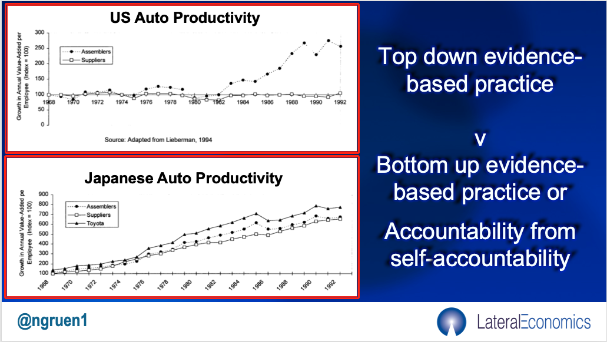

Why does this graph capture the idea of the Evaluator General? All is revealed in this post.Luke Slawomirski, a health economist I met at the OECD over a decade ago when I proposed Gruen Tenders among other things to the health policy folks there. Anyway, in August Luke, who was previously a clinician and now lectures and is finishing a PhD at the Menzies Institute for Medical Research, asked if I’d like to join him as a co-author of the piece you see below.
Since 2018, about 33,000 fewer Australian patients have suffered avoidable complications like infections, pressure sores, and surgical mishaps in our public hospitals each year, according to a recent study. That’s freed up an estimated 55,000 hospital beds, worth nearly $400 million based on current prices.
How was it done? By spending more? No — by paying less when hospitals failed to prevent harm. This can be seen as a win for pay-for-performance (p4p), the idea that tying dollars to outcomes can sharpen incentives and drive improvement.
But the real lesson isn’t about hospitals, or even penalties as a lever for improvement. The message is that policy works best when it is treated as a cycle of implementation, evaluation, and adaptation.
That’s where Australia still falls short.
What the study did and didn’t show
The study examined seven and a half years of data across Australia’s public hospitals. It found that once a financial penalty for a set of thirteen complications was introduced, the national rate of those complications fell. In other words, the system adjusted.
That’s encouraging, but questions remain. It’s unclear if the decline reflects genuine improvement in patient care or changes in documentation practices. It’s unclear if some states or hospitals improved more than others, and why. Were there unintended consequences, such as hospitals becoming more risk-averse in treating complex patients?
We don’t fully know, because the infrastructure for monitoring and evaluation (M&E) in our health system and indeed across government services is patchy, underfunded, and too often politicised.
The problem with evidence-based policymaking
For decades, “evidence-based policy” has been held up as standard practice. But as one of us has pointed out, this often amounts to little more than a slogan. Programs are announced with great fanfare, receive glowing internal report cards, and are then quietly retired.
The reasons are structural. Agencies are usually tasked with both delivering programs and evaluating them. This is a conflict of interest that tilts the incentives toward self-congratulation. First, one can’t depend on the independence of the evaluations. He who pays the piper — in this case, the agency running the program being evaluated — calls the tune. In any event, if evaluations do prove inconvenient, they’re often buried.
At the same time, frontline staff are rarely empowered to generate and use data to improve their practice, while academics are prone to producing gold-standard studies that follow recognised procedures, so they contribute to the author’s publications record but are too slow and expensive to guide real-time decision-making.
The result is a political system addicted to announceables, where learning is sporadic and fragile.
Why we need an evaluator-general
We believe Australia needs an evaluator-general: an independent statutory office, reporting to Parliament, with powers akin to the auditor-general but focused on monitoring, evaluation and improvement.
Under this model, no new program could be introduced without a proper monitoring and evaluation plan. Evaluators would work alongside delivery agencies — and their frontline workers — to design and implement monitoring systems, but they would ultimately report independently. Their findings would be published.
Crucially, evaluation would be designed not just to judge success or failure from on high, but to help those at the coalface improve. That means feedback loops that are timely, practical and trusted. It also means that evidence is generated first to support better service delivery, and then aggregated/generalised to inform broader policy debates.
Nor should such exertions be focused on new programs. Evaluation needs to answer the ‘compared to what?’ question, so incumbent programs should be brought into the process.
What does this have to do with hospital safety?
The p4p study demonstrates that policy interventions can change behaviour. But it also demonstrates the limits of our current system. Without a robust, independent evaluation infrastructure, we cannot fully distinguish genuine improvements from statistical artifacts or behaviours that had negative consequences in places that weren’t measured.
Nor can we easily extract lessons for other parts of the health system, or for different sectors such as education, employment services, or climate adaptation.
Imagine if the evaluator-general existed alongside the hospital funding system. Independent officers embedded in hospitals, working with frontline services, could track not just complication rates, but the mechanisms behind improvements: staff training, infection control practices, teamwork innovations. These lessons could then be disseminated to other hospitals and even beyond the health sector, creating evidence about what works (and doesn’t work) in public policy.
Instead of treating each policy lever — be it financial penalties, subsidies, or regulations — as a one-off experiment whose results are quickly politicised or forgotten, we could embed systematic cycles of trial, evaluation, and adaptation.
Building a learning State
This is not about creating yet another layer of bureaucracy.
It is about building “learning organisations” at the scale of government. Businesses like Toyota long ago realised that frontline data, if harnessed properly, can drive continuous improvement. Government agencies, by contrast, too often suppress or sanitise information to avoid embarrassment.
An evaluator-general would help redress that imbalance, strengthening both accountability and performance. Its establishment would be a step toward embedding learning at the heart of government.
Now, wouldn’t that be something!?